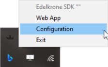

Configuration of the edelkrone SDK
The edelkrone SDK has a configuration file in JSON format. It contains pieces of information: SDK server address and port, web server address and port, and serial port information.

As above image shows this configuration file can be reached from the system menu. The JSON file opens by default in a text editor of your OS when you click on the Configuration label.
You need to restart edelkrone SDK after you have changed the configuration file.
Server Configuration
The edelkrone SDK has three servers: HTTP, WebSocket and Web-Server. Each server has its address and port configuration.
HTTP Server Configuration
The HTTP server has two configurations communication IP and port.
The default configuration is always `0.0.0.0:32222`.
Websocket Server Configuration
The Websocket server has two configurations communication IP and port.
The default configuration is always `0.0.0.0:32223`.
Web Server Configuration
The web server has two configurations communication IP and port.
The default configuration is always `0.0.0.0:32224`.